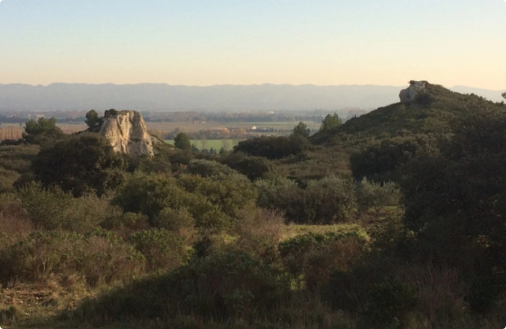
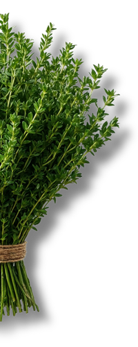
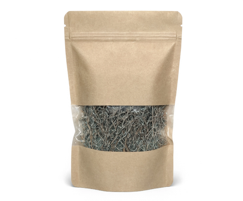
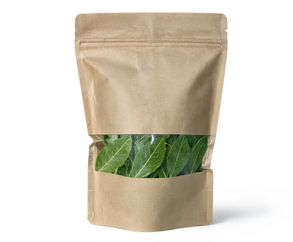
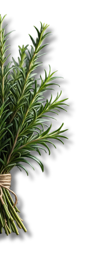
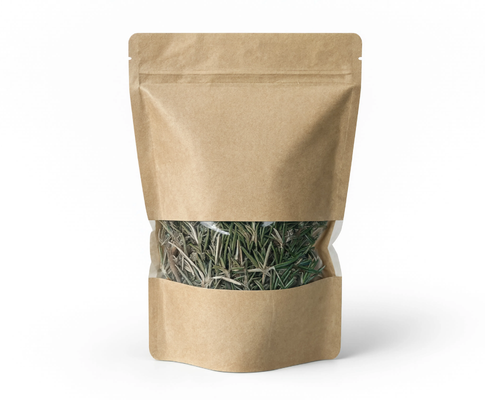
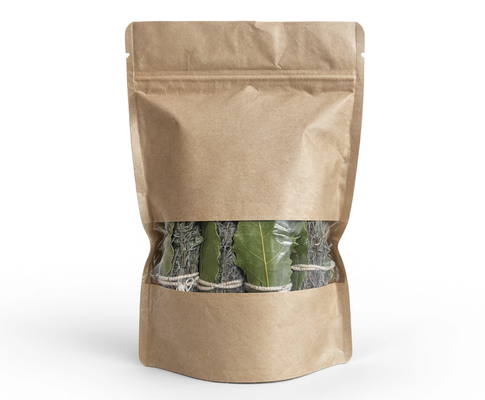
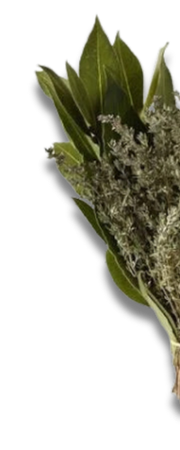

Herbier de Provence
Grossiste en herbes aromatiques sauvages de Provence
Thym, romarin et laurier frais ou sec.
Demander un devisÀ propos
Une récolte au cœur de la Provence

Herbier de Provence est spécialisé dans la cueillette et la distribution d'herbes aromatiques
sauvages issues des garrigues provençales. Nous sélectionnons avec soin le thym, le
romarin et le laurier sauce, dans le respect des milieux naturels et des cycles de
végétation.
Toutes nos récoltes sont réalisées uniquement à la commande et en dehors des périodes de
restrictions d'accès aux massifs forestiers. Nous disposons des autorisations de récolte
délivrées par les communes concernées, garantissant une activité conforme à la réglementation
locale et une préservation de la faune et de la flore.
Nos herbes aromatiques
Les saveurs uniques du sauvage
Chaque plante est cueillie, triée et conditionnée entièrement à la main. Notre démarche
repose sur
des pratiques de cueillette responsable, respectueuses des écosystèmes provençaux, afin de
préserver
durablement les ressources naturelles et la biodiversité.
De la récolte au conditionnement, chaque étape suit un processus rigoureux conçu pour
préserver au maximum les qualités nutritionnelles, aromatiques et sensorielles des plantes.
Nous proposons ainsi des produits authentiques et de haute qualité à destination des
restaurateurs, épiceries fines, traiteurs et grossistes à la recherche de saveurs naturelles
et locales.

Thym sauvage
Aux notes intenses et parfumées, le thym sauvage relève délicatement les viandes,
poissons, légumes et autres préparations culinaires.
Disponible frais ou sec
Conditionné ou au vrac
En branche ou en bouquet


Laurier sauvage
Aux arômes frais et délicatement boisés, le laurier sauvage parfume subtilement les
sauces, mijotés, bouillons et autres préparations culinaires.
Disponible frais ou sec
Conditionné ou au vrac
En branche ou en bouquet

Romarin sauvage
Aux arômes puissants et généreux, le romarin sauvage apporte une touche
méditerranéenne aux viandes, légumes, marinades et autres préparations culinaires.
Disponible frais ou sec
Conditionné ou au vrac
En branche ou en bouquet


Bouquets garnis sauvages
Composés de thym et d’une feuille de laurier, les bouquets garnis sauvages offrent
une saveur unique et authentique à toutes les préparations culinaires.
Disponible frais ou sec
Conditionné ou au vrac
En branche ou en bouquet

Pourquoi choisir Herbier de Provence ?
Des herbes aromatiques sauvages et locales
Origine Provence
Garantie
Chaque plante est récoltée au cœur des garrigues provençales.
Conditionnement adapté
aux professionnels
Un conditionnement sur mesure pour répondre à tous les besoins.
Devis personnalisés
et relation directe
Un service client à taille humaine à l'écoute de vos attentes.
Contact
Demandez un devis
Vous êtes un professionnel et souhaitez connaître nos tarifs ou nos disponibilités ? Contactez-nous pour un devis gratuit et sans engagement.